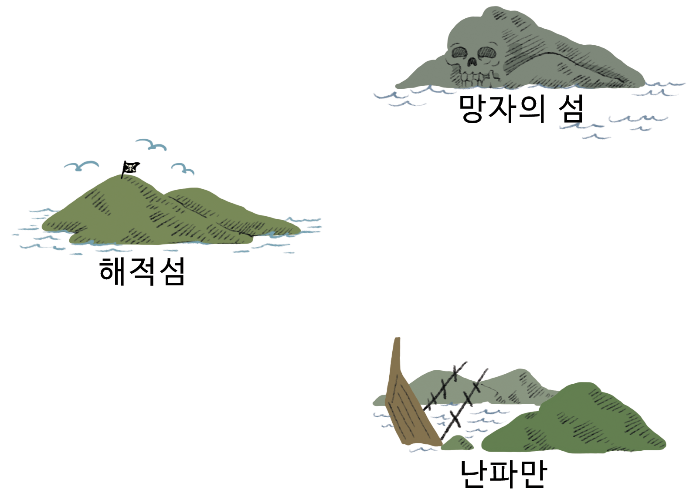
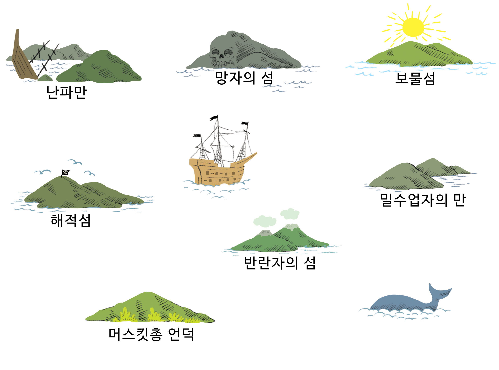
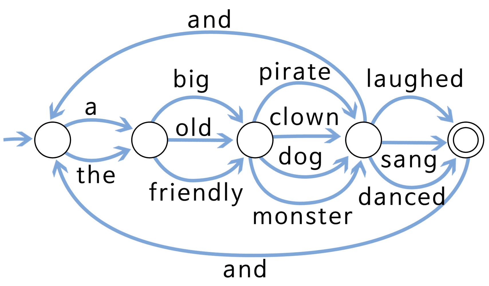
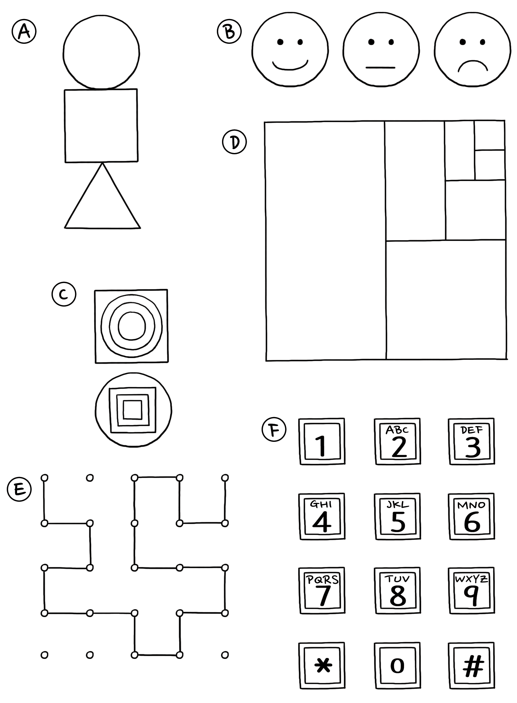

Chapter 3 제 3 부
컴퓨터에 무엇을 수행할지 지시하기 — 절차의 표현
컴퓨터에 무엇을 수행할지 지시하기
컴퓨터는 초당 수백만번 명령에 따라 움직입니다. 컴퓨터에 무엇을 수행해야 할지 지시하기 위해서, 올바른 명령을 주면 좋겠지만, 말처럼 생각만큼 쉬운 일이 아닙니다.
우리는 명령을 받았을 때, 명령의 의미를 해석하기 위해서 상식적으로 생각합니다. “문을 통해서 오세요”라고 누군가 말을 한다면, 실제로 문을 부수고 통과해서 들어오라는 뜻은 아닙니다. 필요하다면 문을 열고 통해서 들어오라는 의미입니다. 컴퓨터는 매우 다릅니다. 만약 모바일 로봇에 컴퓨터가 장착된다면, 명령을 글자 그대로 해석해서 문을 부수고 들어올 수 있는 위험이나 손상이 생길 수 있으니 주의할 필요가 있습니다. 생각 없이 명령을 정확하게 수행만 하는 컴퓨터를 다루는 것에 익술해질 필요가 있습니다.
제 3 부에서는 활동 2개를 통해서 고정된 명령어 집합을 사용하여 문자 그대만 움직이는 기계(컴퓨터)와 상호작용하는 것이 어떤 의미인지를 학습하게 될 것입니다.
첫번째 활동에서는 컴퓨터가 작업할 수 있는 기호, 즉 단어, 숫자, 기호 문자열을 인식하기 위해 컴퓨터가 사용하는 기계, “유한-상태 오토마타(finite-state automata)” 에 대해 배웁니다.
두번째 활동은 인간이 어떻게 컴퓨터와 상호작용하는지 배웁니다. 좋은 프로그래머는 문자 그대로 해석되는 한정된 명령어 집합으로 컴퓨터가 무엇을 수행할지 전달하는 방식에 대해서 이해할 필요가 있습니다. 명령어 목록이 프로그램입니다. 이러한 명령어를 작성하는 프로그래밍 언어가 많이 있지만, 여기서는 컴퓨터 없이도 사용할 수 있는 매우 간단한 언어를 사용할 것입니다.

3.1 보물 찾기 - 유한상태 오토마타
3.1 개요
컴퓨터 프로그램이 문서안에서 문자나 단어, 혹은 다른 컴퓨터 프로그램의 텍스트 같은 기호 순서(sequence)를 종종 처리할 필요가 있다. 컴퓨터 과학자는 이런 작업을 처리하기 위해서 유한상태 오토마타를 사용합니다. “기호는 문서 안의 문자나 단어 또는 프로그램 문장”, “정수는 0~ 9까지 숫자가 늘어선 것”, “실수는 일정 숫자 순서 뒤에 소수점이 1개 있고 다시 숫자가 늘어선 것” 같이 단어나 기호 문자열을 컴퓨터가 인식해야 합니다. 유한상태 오토마타는 명령어 집합을 따라서 컴퓨터가 단어나 기호 문자열을 인식하는지 확인합니다. 유한상태 오토마타에 상응하는 보물지도를 사용하여 활동을 수행합니다.
3.1 교과학습 연계
- 수학 : 논리와 추론 개발하기 — 패턴을 기술하고 이어가는 단어나 기호 사용하기
- 사회 연구
- 영어/국어
3.1 기술
- 간단한 독도법(지도 읽기)
- 패턴 인식
- 논리
- 명령 이해하기
3.1 나이
- 9세 이상
3.1 학습 교재
- 선생님이 필요한 것
- 섬 카드 한 세트 (지도를 그리려는 아이들에게 지침이 노출되지 않도록 주의하세요.)
복사 마스터: 섬 카드 복사해서 자르기 점선을 따라 접고 카드의 앞면에는 섬의 이름이 뒷면에는 명령이 되도록 풀칠한다.- 아아마다 필요한 것
- 워크시트 활동: 보물섬에 보물로 가는 길을 찾으세요.
- 펜 또는 연필
- 선택적으로 발전학습을 위해, 아이마다 필요한 것
- 워크시트 활동: 보물섬
- 워크시트 활동: 수수께끼 동전 게임
3.1.1 언플러그드 활동 동영상
| 한글 동영상 | 영어 동영상 |
|---|---|
3.1.2 보물섬
3.1.2.1 들어가며
이번 여정의 목표는 보물섬을 찾는 것입니다. 우호적인 해적선은 여행자를 태우고, 섬 사이를 정해진 항로로만 항해합니다. 각 섬에는 여러분이 선택할 수 있는 두 대의 배 > A,B가 있습니다. 보물섬으로 가는 가장 좋은 항로를 찾아보세요. 섬에 도착하면 A, B 선박에 승선을 요청할 수 있지만, 두 배 모두를 선택할 수는 없습니다. 섬에 있는 사람은 배가 다음에 어느 섬으로 항해할 것인지를 말해 줄 수는 있지만, 해적들이 모든 섬의 지도를 가지고 있지 않습니다. 자신만의 지도를 사용하여 어느 배를 타고, 어느 섬으로 항해했는지 기록하세요.
3.1.2.2 시연
(주목: 아래 지도는 실제 활동에 사용되는 것과 다른 지도입니다.)
슬라이드 혹은 칠판에 아래처럼 3개의 섬으로 이루어진 그림을 그리세요:

다음 두 페이지에 있는 3장의 카드를 복사해서 아이들이 카드를 1장씩 갖게 합니다. 3장의 카드는 실제 활동에서 사용되는 것과 다르다는 것을 알려줍니다.
해적섬에서 시작해서 배A를 선택합니다. 해적섬 카드를 가진 아이는 배A를 난파만을 목적지로 이동합니다. 지도에 그 경로를 기록합니다. 난파만에서 다시 배A를 선택합니다. 아이는 다시 해적섬으로 배의 진로를 말합니다. 지도에 이것을 기록합니다. 이번에는 배B를 선택합니다. 지도에 표시합니다. 이 경로가 선택하게 되면, ’망자의 섬’으로 가서, 꼼짝할 수 없이 갇히게 됩니다.
최종지도는 다음과 같습니다:
3.1.2.3 시연 활동을 위한 카드

3.1.2.4 활동
섬 역할을 수행할 아이 7명을 선택합니다. 아이들은 뒷면에 비밀 명령이 있는 섬 카드를 지니고 있습니다. 교실 내부나 실외에서 적절한 공간에 무작위로 아이들을 배치하세요> . 나머지 아이들은 공백 지도를 가지고 해적섬에서 보물섬으로 가는 항로를 지도에 표시하면서 항해할 것입니다. (보물섬에 갈 아이는 한 번에 한 명만 한정하여 미리 > 목적지를 듣고 못하도록 하는 것이 좋습니다.)
빨리 끝난 아이: 다른 경로를 찾아보세요.
완성된 지도는 아래와 같을 것입니다.

3.1.2.4.1 후속 토론
가장 빠른 항로는 무엇입니까?
매우 느린 항로는 무엇입니까?
몇몇 항로는 반복(loop)을 포함한 항로도 있습니다.
반복을 포함한 항로의 예를 보여줄 수 있습니까?
보물섬에 도착하는 항로의 예를 보여줄 수 있나요? (예를 들어, 항로 BBBABAB과 BBBABBABAB 모두 보물섬에 도착합니다)
3.1.3 워크시트 활동: 보물섬의 보물까지 가는 길을 찾아라.

3.1.3.1 복사 마스터: 섬 카드


3.1.3.1 유한-상태 오토마타(Finite-State Automata)
지도를 그리는 다른 방법은 다음과 같습니다.
섬은 숫자를 포함한 원으로 표현하고, 최종 보물섬은 이중 원으로 표시합니다. 최종 보물섬에 도착하기 위해서 어떤 항로로 항해를 해야 할까요?
주의: 지도 (a)에서는 일련의 항해 순서(sequence)가 홀수개의 A를 가진 경우에만 이중 원(섬 2)에 도착할 수 있습니다. (예: AB, BABAA, or AAABABA).
지도 (b)는 A와 B가 교대로 나타나는 경우에만 이중 원 (섬 1)에 도달할 수 있습니다.Bs (AB, ABAB, ABABAB, …)
지도 (c)는 이동 순서(sequence)에 적어도 하나의 B가 포함되어야 합니다. (B를 포함하지 않은 A, AA, AAA, AAAA, … 은 이중 원(섬 2)에 도달할 수 없습니다.)

3.1.4 워크시트 활동: 보물섬
보물을 잘 숨기셨는지요? 보물을 찾기 얼마나 힘들게 할 수 있을까요? 이제 자신만의 보물지도를 만들어 보세요.
- 동일한 아이디어를 지도로 표현하는 좀더 복잡한 방식이 다음에 있다. 이 지도는 앞에서 연습한 것과 동일하다. 컴퓨터 과학자는 이러한 빠르고 쉬운 방식을 사용하여 패턴에 대한 경로를 설계한다.

이것을 참조해서 자신만의 항해 계획을 그려보자. 이제 여러분의 해적선의 항해 경로를 명확하게 시각적으로 표현할 수 있다. 그리고 나서 자신만의 공백 지도와 섬 카드를 만들어 보자. 보물섬에 도착하는 가장 효과적인 항해 순서는 어떻게 될 까요?
- 친구들이 여러분이 작성한 지도를 따라 잘 항해를 할 수 있을까요? A, B 순서 조합에 대해서 알려주고, 친구가 제대로 섬에 도착하는지 알아보세요.
유한상태 오토마타의 개념에 기초하여 다양한 게임과 퍼즐을 만들 수 있습니다.
- 다음은 지도의 무작위 경로를 따라서 만나게 되는 단어를 적어 나가 자연스럽게 문장을 생성하는 방법입니다.

이제 동일한 개념을 이용하여 새로운 작문 게임을 만들어봅시다. 혹시, 재미있는 코믹 이야기를 만들 수도 있습니다.
3.1.5 워크시트 활동: 수수께끼 동전 게임
한 친구가 인터넷에서 게임을 다운로드 했습니다. 로봇이 동전을 던지면, 앞면이 나올지 뒷면이 나올지를 맞추는 게임이었습니다. 처음에 무척이나 간단해 보였고, 적어도 50대50 가능성이 있다고 생각했습니다. 하지만, 잠시 뒤에 의심스러운 생각이 들었습니다. 동전 던지기에 특정한 패턴이 있는 것처럼 보였습니다. 인간이 게임을 이길 수 없게 게임이 조작되었나? 분명 아닙니다. 게임을 조사하기로 마음먹고, 조(Joe)는 게임에서 동전 던지기 결과를 적기 시작했고, 다음이 동전던지기 결과 찾아낸 것입니다. (h = heads 앞면, t=tails 뒷면)
h h t h h t h h h t t h h h h t t h t t t h h h h h t h h h t t t h h h t t t h h h h h h t t h t t t t t h t t h t t t h h h t t h h h t h h h h h h h h h t t h
h h t t t t h h h h h t t t t t t t예측 가능한 패턴을 찾으셨나요?
동전던지기 규칙을 나타내는 아주 간단한 지도가 있습니다. 여러분이 해결할 수 있는지 확인해 보세요. (힌트: 단지 4개의 ‘섬’밖에 없습니다.)
3.1.6 컴퓨터 과학 핵심 개념
컴퓨터 과학에서 컴퓨터가 문자나 이벤트 순서(sequence)를 처리하려고 유한상태 오토마타(finite-state automata)를 사용합니다.
가장 간단 사례로 전화 자동응답 서비스가 있습니다. 전화를 걸면 자동응답 시스템에서 “무슨 서비스를 원한다면… 1번, 다른 무언가를 원한다면 … 2번, 상담원과 직접 통화를 원하시면 3번 버튼을 누르십시오”라는 메시지를 들을 수 있습니다. 전화 숫자 버튼을 누르는 것은 전화 저편에 있는 컴퓨터 유한상태 오토마타에 입력을 주는 것입니다 . 컴퓨터와 대화는 간단할 수도, 매우 복잡할 수도 있습니다. 유한상태 오토마타에는 특유의 무한반복이 존재하기 때문에, 계속해서 동일한 대화를 반복하게 됩니다. 만약 이런 일이 발생한다면, 분명한 시스템 설계에 오류가 있으며, 전화를 거신 여러분은 분명 매우 당황스러울 것입니다.
또 다른 사례는 현금 자동인출기계에서 현금을 인출하는 경우입니다. 현금 자동인출기계 프로그램은 여러분들로 하여금 이벤트 순서를 발생시킬 것입니다. 프로그램 내부에, 모든 가능한 순서가 유한-상태 오토마타로 표현되어 있습니다. 사용자가 키를 누를 때마다 다음 상태로 자동적으로 이동하게 됩니다. 몇몇 상태는 컴퓨터에 지시사항을 담고 있습니다. 예를 들어, “현금 만원을 지불하세요”, “명세표를 출력하세요”, “현금카드를 꺼내세요”.
몇몇 컴퓨터 프로그램은 워크쉬트 보물섬 같은 지도를 사용하여 국어나 영어 문장을 정말 잘 다룹니다. 이들 컴퓨터는 문장을 잘 만들어 낼 뿐 아니라 사용자가 입력하는 문장을 잘 처리하기도 합니다. 1960년대 컴퓨터 과학자가 사람과 대화하는 “Eliza”, 후에 “Eliza Dolittle”라는 프로그램을 만들었습니다. 영화 ’마이 페어 레이디’에서 오드리 헵번이 연기한 꽃 파는 소녀 이름이기도 합니다. 이 프로그램은 마치 자신이 심리치료 전문가처럼 행사하며 “여러분의 가족에 대해서 알려주세요”, “아무쪼록 계속하십시오” 같이 대화를 이끌어 가는 질문을 곧잘 했다. 사실 이 컴퓨터는 아무것도 이해를 하지 못하지만, 그럴듯하게 보였고, 몇몇 사람은 자신이 사람 심리치료 전문가와 대화하고 있다고 생각하기도 했습니다.
컴퓨터가 자연어를 이해하는 데는 서투르지만, 인공언어를 처리하는 것은 꽤 잘 합니다. 프로그래밍 언어는 중요한 인공언어 중 하나입니다. 컴퓨터는 유한상태 오토마타를 사용하여 프로그램을 읽어서 컴퓨터가 “실행할”" 수 있는 컴퓨터 명령어로 변환합니다.
3.1.7 해답과 힌트
3.1.7.1 수수께끼 동전 게임
수수께끼 동전 게임은 동전을 던질 때마다 다음 지도를 사용합니다.

이 지도를 따라가면, 동전을 세번 던질 때마다 처음 두번은 필히 같은 면을 가지는 것을 알 수 있다.
3.2 진군 명령 - 프로그래밍 언어(Programming Languages)
3.2 개요
대체로 컴퓨터는 제한된 명령어 어휘로 구성된 “언어”로 프로그래밍됩니다. 프로그래밍에 대한 가장 힘든 부분 중의 하나는 컴퓨터가 말도 안되는 결과를 생성하더라도, > 지시사항을 글자 한자까지도 지키다는 것입니다. 이번 활동을 통해서 아이들은 프로그래밍의 이러한 점을 경험할 것입니다.
3.2 교과학습 연계
- 영어 : 대인 관계 듣기 레벨 3
3.2 기술
- 지침을 주고 받는 것을 이해하기
3.2 나이
- 7세 이상
3.2 학습 교재
- 선생님이 필요한 것
- 다음에 그려진 것 같은 그림 카드
- 아아마다 필요한 것
- 연필, 종이, 자

3.2.1 언플러그드 활동 동영상
| 구분 | 동영상 |
|---|---|
| 순차적 실행 | |
| 함수(I) : | : |
| 함수(II) : | : |
| 조건문 : | : |
| 릴레이 프로그래밍 : | : |
3.2.2 진군 명령
3.2.2.1 들어가며
사람이 지시 명령대로만 움직여 복종하는 것이 좋은 것인지를 토론하자. 예를 들어, 만약 여러분이 닫혀있는 문을 가리키며 “그 문을 통과하십시오”라고 하면 무슨 일이 발생할까요?
컴퓨터는 주어진 명령 목록 그대로 수행합니다. 비록 상식적으로 납득이 가지 않는 것도 정확하게 명령 목록에 적혀진 그대로 수행합니다.
3.2.2.2 시연 예제
아래 지시사항을 따라서 아이들이 그림을 그릴 수 있는지 살펴봅시다.
아래 사각형 중간에 점을 그리세요.
왼쪽 상단 모서리에서 시작해 가운데 점을 지나 오른쪽 아래 모서리에서 끝나는 직선을 그으세요.
왼쪽 아래 모서리에서 시작해 가운데 점을 지나 오른쪽 위 모서리에서 끝나는 직선을 그으세요.
왼쪽 중간 삼각형에 자신의 이름을 쓰세요.
결과를 확인하고 친구의 그림과 비교해 보세요.
결과는 아래와 같은 느낌입니다.
3.2.3 활동
아이를 골라서 개요에 나와 있는 것과 같은 그림을 주세요. 학급의 아이들이 그림을 그릴 수 있도록 선택된 아이가 그림을 묘사합니다. 아이들이 질문을 통해서 묘사하는 지침을 명확히 할 수 있습니다. 이번 활동의 목적은 얼마나 빠르고 정확하게 완료하는지를 확인하는 것입니다.
동일한 활동을 반복하지만, 이번에는 아이들이 질문을 할 수 없습니다. 이번 활동은 아이들이 빨리 쫓아가기가 어렵기 때문에, 좀더 간단한 이미지를 사용하는 것을 권장합니다.
스크린 뒤에서 아이가 지침만 전달하는 방식으로 진행합니다. 이번 활동에서는 어떠한 질문도 허용되지 않고, 커뮤니케이션이 단지 지침의 형태로만 전달됩니다.
마지막 종류의 커뮤니케이션 방식이 프로그램을 작성할 때 프로그래머가 경험하는 것과 동일하다는 것을 일러줍니다. 프로그래머가 컴퓨터에 명령문을 전달하지만, 나중에 실행해 보기까지는 결과를 알 수 없습니다.
아이에게 그림을 그리고 명령문을 작성하게 합니다. 짝을 지어서 혹은 전체 학급이 실습을 진행합니다.
3.2.3.1 변형
종이 비행기를 만드는 명령문을 적어보세요.
“앞으로 x 미터 전진하세요”, “90도 왼쪽으로 도세요”, “90도 오른쪽으로 도세요” 같은 명령문을 사용하여 학교 비밀장소에 도착하는 명령문을 작성해 보세요.
아이들은 자신들이 생각한 결과를 얻을 때까지 명령문을 시험하고 가다듬어야 합니다.눈가리개 게임. 아이 한명의 눈을 눈가리개로 가리고, 지시 명령문에 따라 교실 여기저기를 돌아다니게 해 보세요.
3.2.4 컴퓨터 과학 핵심 개념
컴퓨터는 프로그램(Program)이라고 불리는 명령 목록에 따라 동작합니다. 프로그램은 특별한 작업을 수행하도록 작성되었습니다. 프로그램은 한정된 명령문의 집합으로 특별히 설계된 언어로 작성되었습니다. 프로그램은 컴퓨터가 무엇을 수행해야 하는지를 담고 있습니다. 특정 언어는 다른 언어보다 특정 목적을 수행하는데 더 적합합니다.
어떤 언어를 사용하든지, 프로그래머는 컴퓨터에 실행시키고자 하는 것을 정확하게 전달하는데 능숙해야 합니다. 인간과 달리, 컴퓨터는 터무니 없는 것일지라도 지시명령문의 글자 그대로 수행합니다.
프로그램이 올바르게 작성되었는지도 확인하는 것도 매우 중요합니다. 작은 오류가 아주 큰 문제를 일으킬 수 있습니다. 우주 왕복선 발사, 원자력 발전소, 철도 신호 등 컴퓨터 프로그램의 사소한 오류조차도 발생할 엄청난 결과를 상상해 보세요. 1940년대 초 전자계산기가 고장이 났을 때 내부 전기 릴레이에서 나방 한마리를 제거( “debugged”)해서 고장을 고쳤습니다. 이를 기념하여 오류를 버그(“bug”)라고 하며, 오류 제거하는 것을 “디버깅(debugging”, “벌레 잡기”)라고 부르게 되었습니다.
프로그램이 복잡해질수록, 더 많은 오류가 발생할 가능성은 높아집니다. 미국이 전략방위구상 스타워즈 (“Star Wars”) 프로그램을 진행할 때 커다란 이슈가 되었습니다. 이 > 프로그램은 핵 공격에 대항해 난공불락의 방어체계를 구축하는 컴퓨터로 제어되는 시스템을 구축하고자 했습니다. 몇몇 컴퓨터 과학자는 소프트웨어의 복잡성과 내재된 저신뢰성으로 실현 불가능하다고 주장하였습니다. 가능한 많은 버그를 잡기 위해 소프트웨어를 테스트를 할 수는 있지만, 누군가 미국을 향해서 미사일을 발사해서 실제 시스템을 제대로 동작하는지 시험해야 하는데 이것은 현실적으로 불가능하기 때문입니다.